⚡
ศรีสุราษฎร์เจริญยนต์
Srisuras Charoen Yon · POS
User Manual · คู่มือการใช้งาน
คู่มือการใช้งาน
ระบบขายหน้าร้าน
คู่มือฉบับสมบูรณ์สำหรับพนักงานขายและเจ้าของร้าน ตั้งแต่เปิดร้าน ขายอะไหล่ คืนสินค้า จัดการสต็อก ไปจนถึงปิดยอดและสำรองข้อมูล — พร้อมภาพประกอบจากแอปจริงทุกขั้นตอน
ศรีสุราษฎร์เจริญยนต์ · POSสารบัญ
Contents
สารบัญ
คู่มือแบ่งออกเป็น 14 หัวข้อหลัก ตามลำดับการใช้งานจริงในหนึ่งวันทำงาน
01ภาพรวมระบบ Overview & Navigation4
02เปิดร้าน — ลิ้นชักเงินสด Open Drawer5
03การขายสินค้า & ใบเสร็จ Checkout & Receipt6
04พักบิล — เก็บบิลไว้ขายต่อ Park / Hold8
05ใบเสนอราคา Quotation9
06การคืนสินค้า / ยกเลิกบิล Returns10
07สินค้า / สต็อก Inventory11
08ค้นหาตามรุ่นรถ Search by Vehicle12
09สั่งซื้อสินค้า Purchase Orders13
10ลูกค้า & แต้มสะสม Customers14
11ช่าง & เครดิตช่าง Mechanics & Credit15
12รายงานยอดขาย Sales Reports16
13ปิดร้าน — ปิดลิ้นชัก Closing17
14ตั้งค่า & สำรองข้อมูล Settings & Backup18
＋ภาคผนวก — เคล็ดลับ & คำถามพบบ่อย Tips & FAQ19
ก่อนเริ่มใช้งาน
ระบบทำงานแบบ ออฟไลน์ (Offline-first) และเก็บข้อมูลไว้ใน เครื่องนี้เท่านั้น — ควรสำรองข้อมูลทุกวัน และเก็บไฟล์สำรองไว้ที่ปลอดภัย (ดูหัวข้อ 14)
ศรีสุราษฎร์เจริญยนต์ · POS01 · ภาพรวม
Section 01
ภาพรวมระบบ Overview
หน้าจอแบ่งเป็น 3 ส่วน: แถบเมนูด้านซ้าย สำหรับสลับ 11 หน้าจอ · แถบบนสุด แสดงชื่อร้าน ชื่อหน้าจอ ปุ่มสลับธีม ชื่อแคชเชียร์ และวันเวลา · และพื้นที่ทำงานตรงกลาง โดยเริ่มต้นจะอยู่ที่หน้าขายสินค้าเสมอ
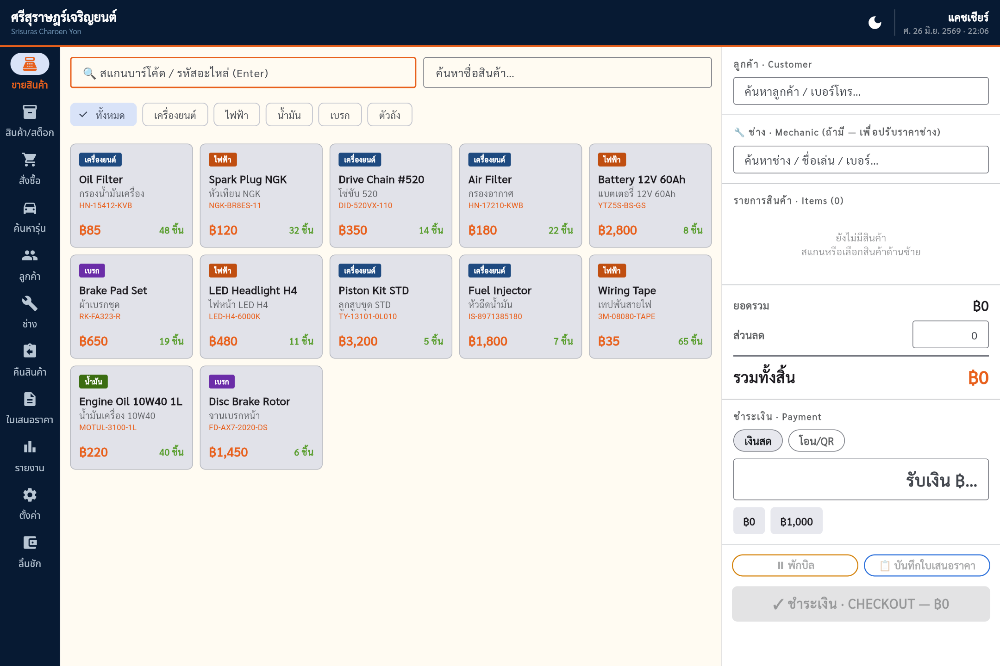
หน้าขายสินค้า — แถบเมนูด้านซ้าย · รายการสินค้าตรงกลาง · ตะกร้าและการชำระเงินด้านขวา
เมนูหลัก 11 หน้า (แถบด้านซ้าย)
🧾ขายสินค้าหน้าขายหลัก / คิดเงิน
📦สินค้า/สต็อกเพิ่ม-แก้ไขสินค้า · เช็กของ
🛒สั่งซื้อใบสั่งซื้อ · รับของเข้าสต็อก
🚗ค้นหารุ่นค้นอะไหล่จากรุ่นรถ
👥ลูกค้าทะเบียนลูกค้า · แต้มสะสม
🔧ช่างทะเบียนช่าง · ยอดเครดิต
↩คืนสินค้าคืนของ · ยกเลิกบิล
📄ใบเสนอราคาสร้าง-จัดการใบเสนอราคา
📊รายงานยอดขาย · สินค้าขายดี
⚙ตั้งค่าข้อมูลร้าน · สำรองข้อมูล
💵ลิ้นชักเปิด/ปิดร้าน · เงินเข้า-ออก
แถบบนสุด
- ซ้าย — ชื่อร้าน (ไทย) และชื่อภาษาอังกฤษ
- กลาง — ชื่อหน้าจอที่กำลังเปิดอยู่
- ขวา — ปุ่ม 🌙 / ☀️ สลับ โหมดมืด/สว่าง · ชื่อแคชเชียร์ · วันที่และเวลาปัจจุบัน
รู้ไว้ก่อน
หน้าจอ 🚗 ค้นหารุ่น · 💵 ลิ้นชัก · 📄 ใบเสนอราคา เป็นเมนูถาวรในแถบซ้าย เข้าถึงได้ตลอด ส่วนการปิดร้านอยู่ในปุ่ม 📊 สรุปยอดปิดร้าน ภายในหน้าลิ้นชัก
ศรีสุราษฎร์เจริญยนต์ · POS02 · เปิดร้าน
Section 02
เปิดร้าน — ลิ้นชักเงินสด Open Drawer
ทุกเช้าก่อนเริ่มขาย ให้เข้าหน้า 💵 ลิ้นชัก และกรอกเงินตั้งต้น (เงินทอน) เพื่อให้ระบบคำนวณยอดเงินสดที่ควรมีได้ถูกต้องตอนปิดร้าน
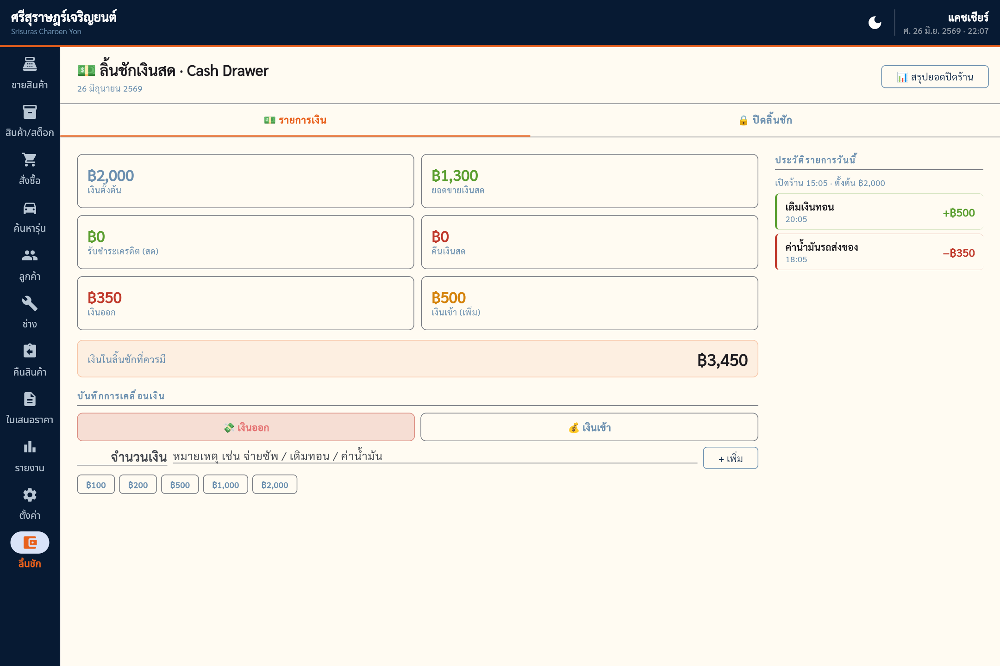
หน้าลิ้นชักเงินสด — แท็บ รายการเงิน / ปิดลิ้นชัก · สรุปเงินที่ควรมีในลิ้นชักด้านซ้าย · ประวัติรายการวันนี้ด้านขวา
- เปิดเมนู 💵 ลิ้นชัก ในแถบซ้ายหากยังไม่ได้เปิดร้าน ระบบจะแสดงข้อความ “ยังไม่ได้เปิดร้านวันนี้” พร้อมช่องกรอกเงินตั้งต้น
- กรอกเงินตั้งต้นพิมพ์จำนวนเงินทอนที่ใส่ลิ้นชักไว้ หรือกดปุ่มลัด ฿500 ฿1,000 ฿2,000 ฿3,000
- กด เปิดร้านระบบบันทึกเวลาเปิดร้านและเริ่มนับยอดเงินสดของวันนั้น
ระหว่างวัน — บันทึกเงินเข้า/ออก
เมื่อมีการจ่ายเงินสดออกจากลิ้นชัก (เช่น จ่ายซัพพลายเออร์ ค่าน้ำมัน) หรือเติมเงินเข้า ให้ทำที่แท็บ 💵 รายการเงิน เลือก 💸 เงินออก หรือ 💰 เงินเข้า ใส่จำนวนและหมายเหตุ แล้วกด + เพิ่ม
ทำไมต้องบันทึก
ทุกรายการเงินเข้า-ออกจะถูกนำไปคำนวณ “เงินในลิ้นชักที่ควรมี” อัตโนมัติ ทำให้ตอนปิดร้านนับเงินแล้วรู้ทันทีว่าเงินขาดหรือเกิน
ศรีสุราษฎร์เจริญยนต์ · POS03 · การขายสินค้า
Section 03
การขายสินค้า Checkout
หัวใจของระบบ — เลือกสินค้าลงตะกร้า เลือกลูกค้า/ช่าง (ถ้ามี) เลือกวิธีชำระเงิน แล้วคิดเงิน ระบบจะตัดสต็อกและออกใบเสร็จให้อัตโนมัติ
กลาง: รายการสินค้า (กรองตามหมวด) — ขวา: ลูกค้า · ช่าง · ตะกร้า · ยอดเงิน · การชำระเงิน
ขั้นตอนการขาย
- เพิ่มสินค้าลงตะกร้ามี 2 วิธี — สแกนบาร์โค้ด/พิมพ์รหัสอะไหล่ในช่องบนสุดแล้วกด Enter หรือคลิกที่การ์ดสินค้าตรงกลาง (กรองตามหมวดด้วยแถบ ทั้งหมด เครื่องยนต์ ไฟฟ้า น้ำมัน เบรก ตัวถัง)
- ปรับจำนวนกดปุ่ม − / + ในตะกร้า (ระบบไม่ให้ขายเกินจำนวนสต็อกที่มี)
- เลือกลูกค้า (ถ้ามี)พิมพ์ชื่อหรือเบอร์โทรในช่อง ลูกค้า · Customer เพื่อสะสมแต้มและยอดซื้อ
- เลือกช่าง (ถ้ามี)พิมพ์ชื่อช่างในช่อง 🔧 ช่าง · Mechanic เพื่อปรับราคาเฉพาะรายการ หรือขายแบบเครดิต (ดูหัวข้อ 11)
- ใส่ส่วนลด (ถ้ามี)กรอกจำนวนเงินส่วนลดในช่อง ส่วนลด (ใส่เกินยอดรวมไม่ได้)
- เลือกวิธีชำระเงินเงินสด · โอน/QR (และ 🔧 เครดิตช่าง เมื่อเลือกช่าง)
- รับเงิน & ทอนเงินกรณีเงินสด: กรอกยอด รับเงิน ฿… ระบบคำนวณ เงินทอน ให้ทันที (มีปุ่มลัดจำนวนเงิน)
- กด ✓ ชำระเงิน · CHECKOUTระบบบันทึกการขาย ตัดสต็อก และเปิดใบเสร็จให้พิมพ์
เคล็ดลับความเร็ว
ช่องสแกนบาร์โค้ดอยู่บนสุดเสมอ — ใช้เครื่องยิงบาร์โค้ดยิงรหัสอะไหล่แล้วกด Enter เพื่อเพิ่มลงตะกร้าได้ต่อเนื่อง
ศรีสุราษฎร์เจริญยนต์ · POS03 · ใบเสร็จ
Section 03 · ต่อ
ใบเสร็จรับเงิน Receipt
หลังกดชำระเงิน ใบเสร็จจะเด้งขึ้นพร้อมเลขที่บิล รายการสินค้า ยอดรวม เงินที่รับ และเงินทอน — รูปแบบกระดาษความร้อน 58 มม.
- เลขที่บิล ขึ้นต้นด้วย RC ใช้อ้างอิงเวลาคืนสินค้า (หัวข้อ 6)
- กด 🖨 พิมพ์ใบเสร็จ เพื่อสั่งพิมพ์ผ่านเครื่องพิมพ์ใบเสร็จ
- กด ✕ ปิด ตะกร้าจะถูกล้าง พร้อมเริ่มบิลถัดไปทันที
การปรับราคาเฉพาะรายการ (ราคาช่าง)
เมื่อเลือกช่างในบิล จะสามารถคลิกที่ราคาของแต่ละรายการเพื่อปรับราคาเฉพาะบิลนั้นได้ (เช่น ราคาพิเศษสำหรับช่างประจำ) — ระบบจะแสดง ส่วนต่างช่าง ในสรุปยอด และมีปุ่มคืนราคาเดิม
ข้อจำกัด
ระบบห้ามตั้งราคาต่ำกว่าทุน — ถ้าพิมพ์ราคาที่ต่ำกว่าราคาทุนของสินค้า ระบบจะเตือนและไม่บันทึกให้
ขายเครดิตช่าง
หากเลือกช่างแล้วเลือกวิธีชำระ 🔧 เครดิตช่าง ยอดบิลจะถูกบันทึกเป็นยอดค้างของช่าง แทนการรับเงินสด (ดูหัวข้อ 11)
ศรีสุราษฎร์เจริญยนต์ · POS04 · พักบิล
Section 04
พักบิล — เก็บบิลไว้ขายต่อ Park / Hold
ลูกค้ายังเลือกของไม่เสร็จ หรือมีลูกค้าอีกคนรีบจ่าย? พักบิลเก็บตะกร้าปัจจุบันไว้ก่อน แล้วกลับมาขายต่อทีหลังได้ โดยไม่กระทบสต็อก
- กด ⏸ พักบิลตะกร้าปัจจุบัน (พร้อมลูกค้า ช่าง และส่วนลด) ถูกเก็บไว้ และตะกร้าถูกล้างให้พร้อมขายบิลใหม่
- ขายลูกค้าคนถัดไปตามปกติบิลที่พักไว้จะปรากฏเป็นชิปบิลที่พักด้านบนสุดของตะกร้า
- เรียกบิลกลับคลิกที่ชิปบิลที่พัก สินค้าทั้งหมดจะกลับเข้าตะกร้า พร้อมขายต่อ
สลับบิลอัตโนมัติ — ไม่มีอะไรหาย
ถ้ากดเรียกบิลที่พักกลับ ขณะที่ตะกร้ายังมีสินค้าอยู่ ระบบจะพักบิลปัจจุบันให้อัตโนมัติก่อน แล้วค่อยเรียกบิลเก่ากลับมา — สลับไปมาได้โดยไม่ต้องกลัวข้อมูลหาย
หมายเหตุ
พักบิลไม่ตัดสต็อก เมื่อเรียกกลับมา ระบบจะตรวจสต็อกใหม่เสมอ — หากสินค้าบางตัวถูกขายหมดไประหว่างนั้น ระบบจะปรับจำนวนหรือเอาออกพร้อมแจ้งเตือน
ศรีสุราษฎร์เจริญยนต์ · POS05 · ใบเสนอราคา
Section 05
ใบเสนอราคา Quotation
ออกใบเสนอราคา (A4) ให้ลูกค้าหรือร้านอู่ โดยยังไม่ตัดสต็อกและยังไม่นับเป็นยอดขาย เมื่อลูกค้าตกลงค่อยแปลงเป็นการขายจริง
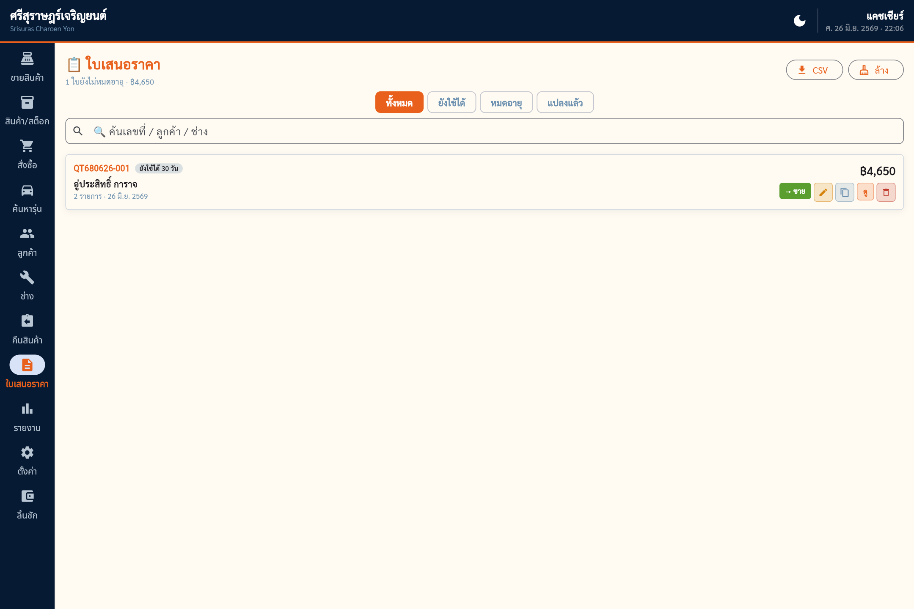
หน้าใบเสนอราคา — กรอง ทั้งหมด/ยังใช้ได้/หมดอายุ/แปลงแล้ว · แต่ละใบมีปุ่ม → ขาย · แก้ไข · ทำซ้ำ · ดู · ลบ
สร้างใบเสนอราคา
- เลือกสินค้าลงตะกร้าทำเหมือนการขายปกติที่หน้าขายสินค้า เลือกลูกค้า/ช่าง และส่วนลดได้
- กด 📋 บันทึกใบเสนอราคาระบบสร้างใบเสนอราคา (เลขที่ขึ้นต้น QT) พร้อมพรีวิวแบบ A4 สำหรับพิมพ์
จัดการใบเสนอราคา
เปิดเมนู 📄 ใบเสนอราคา ในแถบซ้าย เพื่อดูทั้งหมด กรอง ค้นหา และทำสิ่งต่อไปนี้:
- → ขาย — โหลดรายการกลับเข้าตะกร้าเพื่อคิดเงินจริง (ระบบตรวจสต็อกใหม่ให้)
- แก้ไข / ทำซ้ำ — ปรับรายการ หรือคัดลอกใบเดิมเป็นใบใหม่
- ⬇ CSV — ส่งออกเป็นไฟล์ตาราง
- 🧹 ล้าง — ลบใบที่แปลงแล้ว/หมดอายุออก
อายุใบเสนอราคา
ค่าเริ่มต้นมีอายุ 30 วัน (ปรับได้ในหน้าตั้งค่า) ใบที่ยังไม่หมดอายุจะมีป้าย ยังใช้ได้ N วัน
ศรีสุราษฎร์เจริญยนต์ · POS06 · คืนสินค้า
Section 06
การคืนสินค้า / ยกเลิกบิล Returns
คืนสินค้าบางรายการ หรือยกเลิกทั้งบิล ระบบจะคืนสต็อก คืนเงิน และลบยอด/แต้มออกให้อัตโนมัติ พร้อมออกใบลดหนี้ (เลขที่ CN)
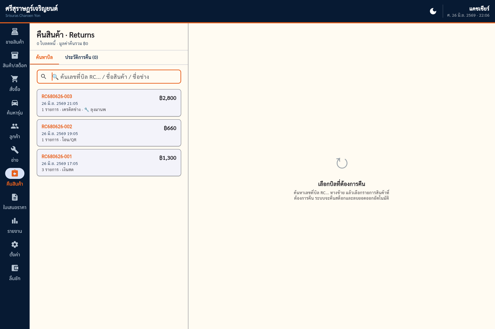
ซ้าย: ค้นหาบิลด้วยเลขที่ RC / ชื่อสินค้า / ชื่อช่าง
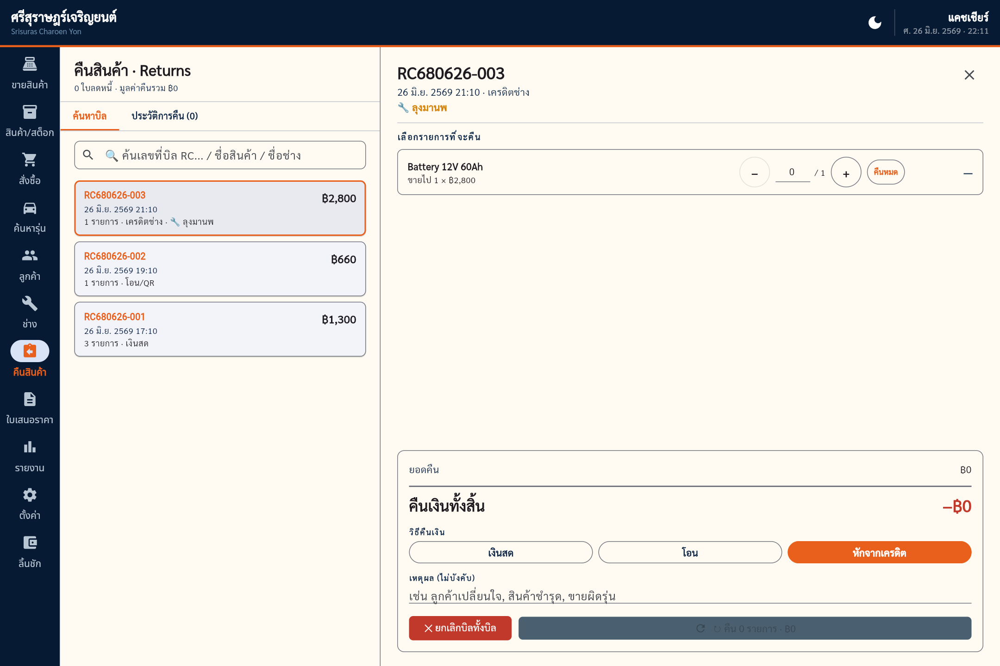
ขวา: เลือกจำนวนที่คืน · วิธีคืนเงิน · ยืนยันการคืน
- ค้นหาบิลพิมพ์เลขที่บิล RC… ชื่อสินค้า หรือชื่อช่าง ในช่องค้นหาทางซ้าย แล้วเลือกบิล
- เลือกจำนวนที่จะคืนปรับจำนวนแต่ละรายการ หรือกด คืนหมด เฉพาะรายการนั้น
- เลือกวิธีคืนเงินเงินสด · โอน · หักจากเครดิต (กรณีบิลช่าง) + ใส่เหตุผล (ถ้ามี)
- กด ยืนยันการคืนสินค้าระบบออกใบลดหนี้และคืนสต็อกทันที — หรือกด ✕ ยกเลิกบิลทั้งบิล เพื่อคืนทุกรายการในครั้งเดียว
ระบบป้องกันการคืนเกิน
คืนได้ไม่เกินจำนวนที่ขายไปจริง (หักจำนวนที่เคยคืนแล้ว) เมื่อคืนครบทุกชิ้น บิลจะถูกทำเครื่องหมาย “ยกเลิกแล้ว” อัตโนมัติ และจะคืนซ้ำไม่ได้
ศรีสุราษฎร์เจริญยนต์ · POS07 · สินค้า/สต็อก
Section 07
สินค้า / สต็อก Inventory
จัดการคลังสินค้าทั้งหมด — เพิ่ม แก้ไข ปรับสต็อก พิมพ์ป้ายบาร์โค้ด และดูสินค้าที่ใกล้หมด
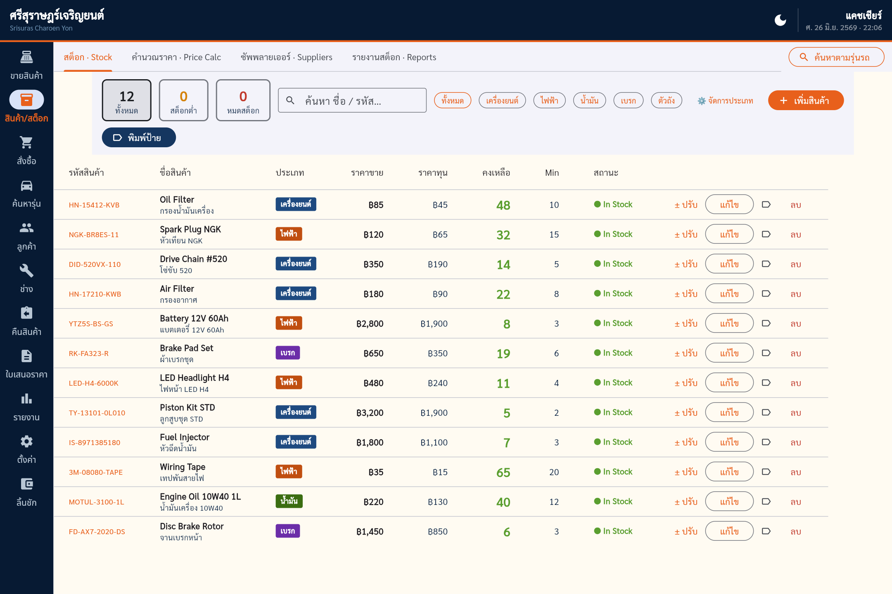
ตารางสินค้า — รหัส · ชื่อ · ประเภท · ราคาขาย · ราคาทุน · คงเหลือ · MIN · สถานะ
การทำงานหลัก (แท็บ สต็อก)
- + เพิ่มสินค้า — เพิ่มอะไหล่ใหม่ (รหัสอะไหล่ห้ามซ้ำกัน)
- แก้ไข — แก้ชื่อ ราคา หมวด รุ่นที่ใช้ได้
- ± ปรับ — ปรับจำนวนสต็อก (เช่น ของชำรุด นับสต็อก) พร้อมบันทึกเหตุผล
- 🖨 พิมพ์ป้าย — พิมพ์ป้ายบาร์โค้ดติดสินค้า
- กรองด้วยชิป ทั้งหมด สต็อกต่ำ หมดสต็อก และตามหมวดหมู่
แท็บย่อย
- สต็อก — ตารางสินค้าหลัก (ในภาพ)
- คำนวณราคา — ช่วยตั้งราคาขายจากราคาทุน + กำไรที่ต้องการ
- ซัพพลายเออร์ — เก็บแหล่งซื้อหลายเจ้าต่อสินค้าหนึ่งตัว เปรียบเทียบราคา
- รายงานสต็อก — การเคลื่อนไหวสต็อก รับเข้า-จ่ายออก
สถานะสต็อก
คงเหลือ สีเขียว = ปกติ · สีส้ม = ใกล้หมด (ต่ำกว่าหรือเท่าขั้นต่ำ) · สีแดง = หมด — ดูจำนวนรายการใกล้หมดได้จากชิป สต็อกต่ำ ด้านบน
ศรีสุราษฎร์เจริญยนต์ · POS08 · ค้นหารุ่น
Section 08
ค้นหาตามรุ่นรถ Search by Vehicle
ลูกค้าบอกแค่รุ่นรถ? เปิดเมนู 🚗 ค้นหารุ่น แล้วพิมพ์หรือเลือกรุ่นรถ ระบบจะแสดงอะไหล่ที่ใช้กับรุ่นนั้นได้ทั้งหมด พร้อมปุ่มคัดลอกรหัส
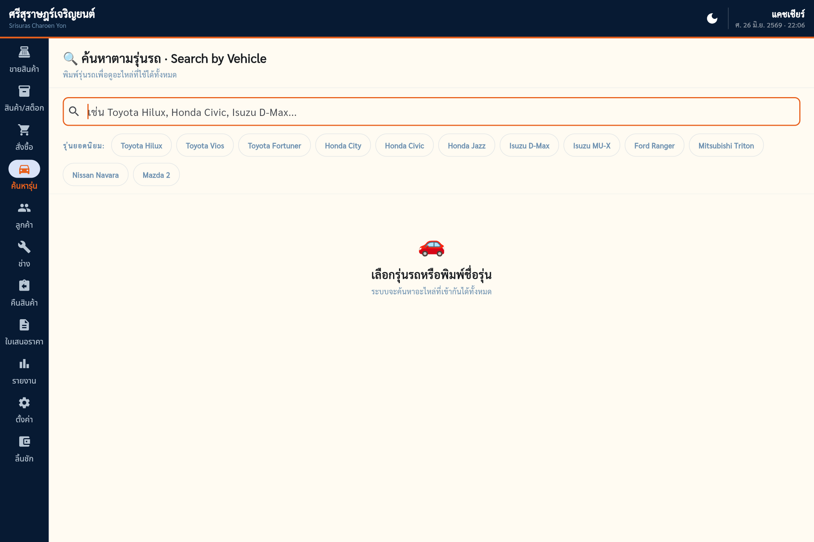
เลือกรุ่นยอดนิยม หรือพิมพ์ชื่อรุ่นในช่องค้นหา
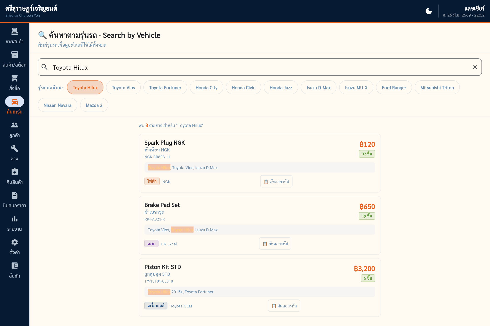
ผลลัพธ์ — รุ่นที่ตรงถูกไฮไลต์สีส้ม · กด 📋 คัดลอกรหัส
- เลือกรุ่นรถกดชิปรุ่นยอดนิยม (เช่น Toyota Hilux Honda City Isuzu D-Max) หรือพิมพ์ชื่อรุ่นเอง
- ดูอะไหล่ที่เข้ากันได้ระบบแสดงสินค้าทุกตัวที่ระบุว่าใช้กับรุ่นนั้น พร้อมไฮไลต์ชื่อรุ่นที่ตรง รหัสอะไหล่ และจำนวนคงเหลือ
- กด 📋 คัดลอกรหัสคัดลอกรหัสอะไหล่ไปวางในช่องสแกนที่หน้าขายเพื่อเพิ่มลงตะกร้าได้ทันที
รุ่นที่ใช้ได้มาจากไหน
ระบบดึงจากช่อง รุ่นที่ใช้ได้ (compat) ของสินค้าแต่ละตัว — กรอกข้อมูลรุ่นให้ครบตอนเพิ่ม/แก้ไขสินค้า (หัวข้อ 7) เพื่อให้ค้นหาเจอ
ศรีสุราษฎร์เจริญยนต์ · POS09 · สั่งซื้อ
Section 09
สั่งซื้อสินค้า Purchase Orders
สร้างใบสั่งซื้อ (PO) ส่งให้ซัพพลายเออร์ และเมื่อของมาส่ง ให้ “รับสินค้า” เพื่อเพิ่มเข้าสต็อกอัตโนมัติ
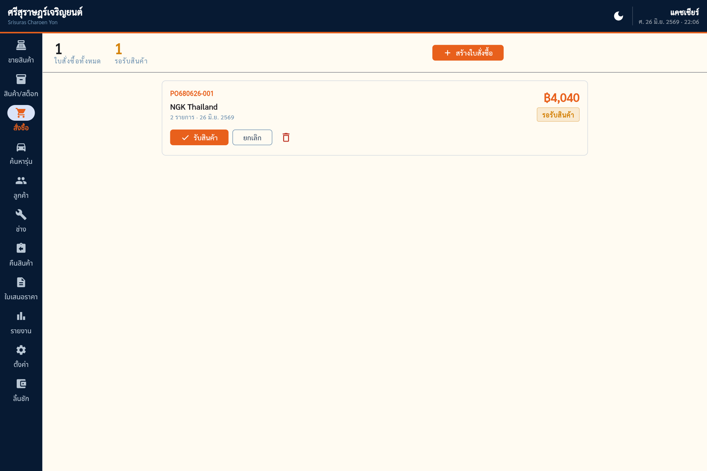
การ์ดสรุปด้านบน (ทั้งหมด · รอรับสินค้า) · แต่ละใบมีปุ่ม รับสินค้า · ยกเลิก · ลบ — เลขที่ขึ้นต้น PO
- กด + สร้างใบสั่งซื้อเลือกซัพพลายเออร์ เพิ่มรายการอะไหล่ จำนวน และราคาทุนที่สั่ง
- บันทึกใบสั่งซื้อใบ PO จะอยู่ในสถานะ รอรับสินค้า
- เมื่อของมาส่ง — กด ✓ รับสินค้าระบบเพิ่มจำนวนเข้าสต็อกและคำนวณราคาทุนเฉลี่ยถ่วงน้ำหนักใหม่ให้ทันที
ราคาทุนเฉลี่ย — สำคัญ
เมื่อรับของเข้า ระบบไม่ได้เขียนทับราคาทุนเดิมด้วยราคาล็อตใหม่ แต่เฉลี่ยถ่วงน้ำหนักกับของเก่าที่เหลือ — ทำให้ราคาทุนต่อหน่วยแม่นยำ ไม่ผิดเพี้ยนจากของล็อตเดียว
เชื่อมกับสต็อกต่ำ
ดูรายการที่ใกล้หมดได้จากชิป สต็อกต่ำ ในหน้าสินค้า แล้วสั่งซื้อเติมได้เลย
ศรีสุราษฎร์เจริญยนต์ · POS10 · ลูกค้า
Section 10
ลูกค้า & แต้มสะสม Customers
เก็บทะเบียนลูกค้าประจำ พร้อมยอดซื้อสะสมและแต้ม — เลือกลูกค้าตอนขายเพื่อสะสมแต้มอัตโนมัติ
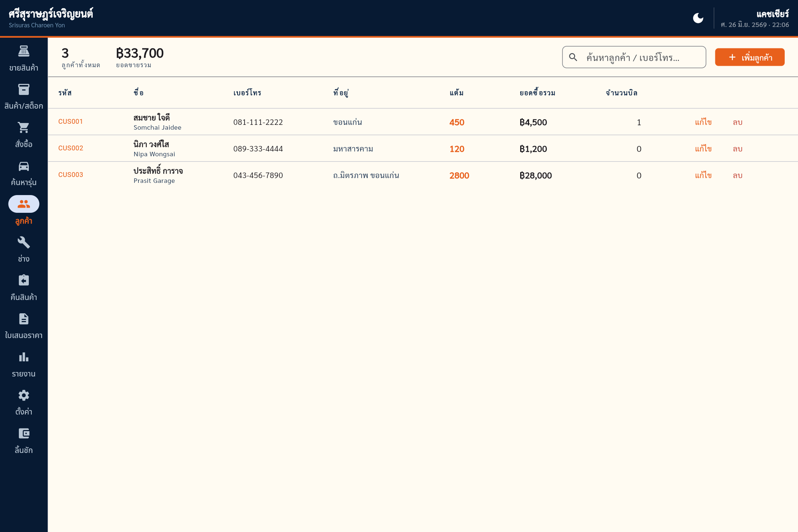
ทะเบียนลูกค้า — รหัส · ชื่อ · เบอร์โทร · ที่อยู่ · แต้ม · ยอดซื้อรวม · จำนวนบิล
- + เพิ่มลูกค้า — ระบบออกรหัสลูกค้า (CUS001…) ให้อัตโนมัติ
- แต้มสะสม — ทุกการขายที่ผูกลูกค้า จะได้แต้ม 1 แต้ม ต่อยอด ฿10
- ยอดซื้อรวม — ระบบรวมยอดให้เอง ใช้ดูว่าใครคือลูกค้าชั้นดี
- คืนสินค้าเมื่อใด ระบบหักแต้มและยอดซื้อตามสัดส่วนให้อัตโนมัติ
ค้นหาเร็ว
ตอนขาย พิมพ์เบอร์โทรในช่องลูกค้าเพื่อดึงประวัติได้ทันที ไม่ต้องจำรหัส
ศรีสุราษฎร์เจริญยนต์ · POS11 · ช่าง & เครดิต
Section 11
ช่าง & เครดิตช่าง Mechanics & Credit
จัดการช่าง/อู่ที่ซื้ออะไหล่ประจำ ตั้งวงเงินเครดิต ขายแบบลงเครดิต และรับชำระยอดค้างได้
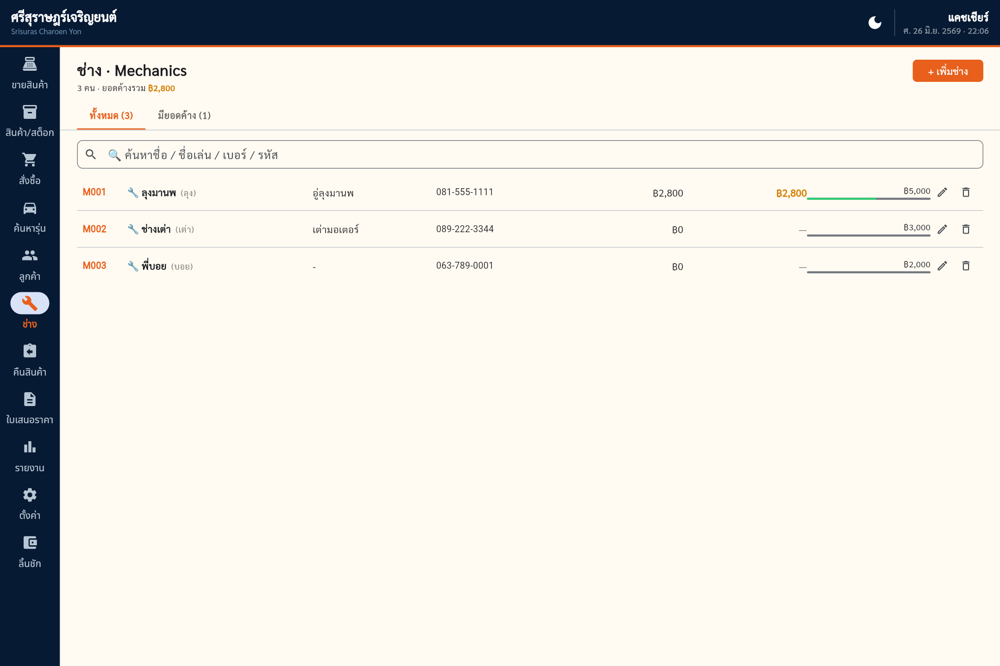
ทะเบียนช่าง — รหัส · ชื่อ/ชื่อเล่น · อู่ · เบอร์โทร · ยอดค้าง · วงเงิน · แท็บ มียอดค้าง
การขายเครดิตช่าง
- เลือกช่างในบิลที่หน้าขาย พิมพ์ชื่อช่างในช่อง 🔧 ช่าง
- เลือกวิธีชำระ 🔧 เครดิตช่างระบบแสดงยอดค้างเดิม + บิลนี้ = ยอดค้างใหม่ และเตือนหากเกินวงเงิน
- คิดเงินยอดบิลถูกบันทึกเป็นยอดค้างของช่าง
รับชำระยอดค้าง
เมื่อช่างมาจ่ายเงิน ให้คลิกที่ช่างเพื่อเปิดรายละเอียด แล้วกด รับชำระ ระบบจะลดยอดค้างลง และถ้าจ่ายเป็นเงินสด จะนับรวมในลิ้นชักวันนั้น
วงเงินเครดิต
ตั้งวงเงินต่อช่างได้ในตารางช่อง วงเงิน — แท็บ มียอดค้าง ช่วยดูว่าช่างคนไหนค้างอยู่ และส่วนหัวจะเตือนหากมีช่าง เกินวงเงิน
ศรีสุราษฎร์เจริญยนต์ · POS12 · รายงาน
Section 12
รายงานยอดขาย Sales Reports
ดูภาพรวมยอดขาย สินค้าขายดี และยอดตามหมวด เลือกช่วงเวลาได้: วันนี้ · 7 วัน · เดือนนี้ · ทั้งหมด
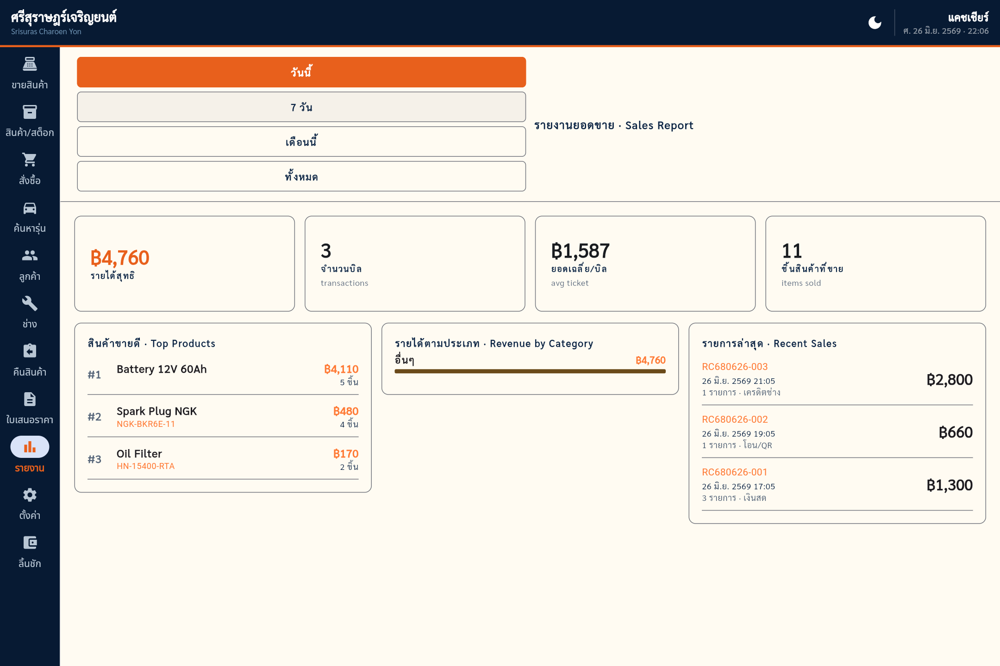
การ์ดสรุป KPI ด้านบน · สินค้าขายดี · รายได้ตามประเภท · รายการขายล่าสุด
ตัวเลขสำคัญ
- เงินสดสุทธิ — ยอดขายในช่วงเวลา หักมูลค่าการคืนสินค้า (รวมบิลที่ยกเลิก) แล้ว — สะท้อนรายได้จริง
- จำนวนธุรกรรม · ราคาเฉลี่ยต่อบิล · จำนวนสินค้าขาย
- สินค้าขายดี · Top Products — จัดอันดับตามจำนวนที่ขายได้
- รายได้ตามประเภท — สัดส่วนยอดขายแต่ละหมวด
- รายการล่าสุด · Recent Sales — บิลล่าสุดพร้อมวิธีชำระเงิน
อ่านยอดให้ถูก
การ์ด “เงินสดรับทั้งหมด” และ “เงินคืนทั้งหมด” แยกให้เห็นชัด ส่วน “เงินสดสุทธิ” คือผลต่างที่เป็นรายได้จริง
ศรีสุราษฎร์เจริญยนต์ · POS13 · ปิดร้าน
Section 13
ปิดร้าน — ปิดลิ้นชัก Closing
สิ้นวัน นับเงินสดจริงในลิ้นชัก เทียบกับยอดที่ระบบคำนวณ แล้วปิดลิ้นชัก — ระบบเก็บประวัติทุกกะไว้ให้
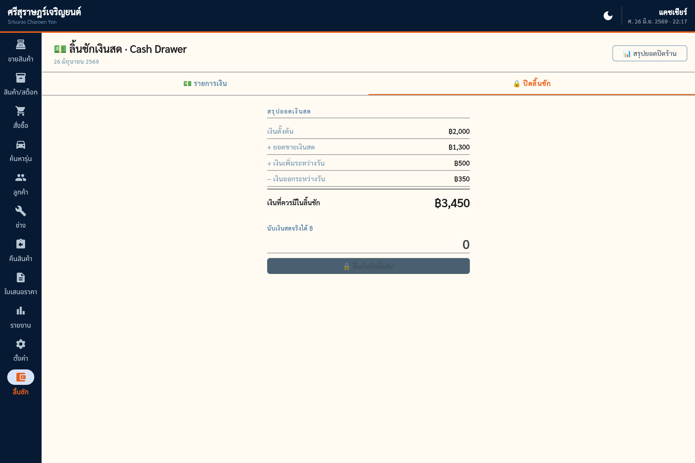
แท็บ 🔒 ปิดลิ้นชัก — สรุปเงินที่ควรมี + ช่องนับเงินจริง
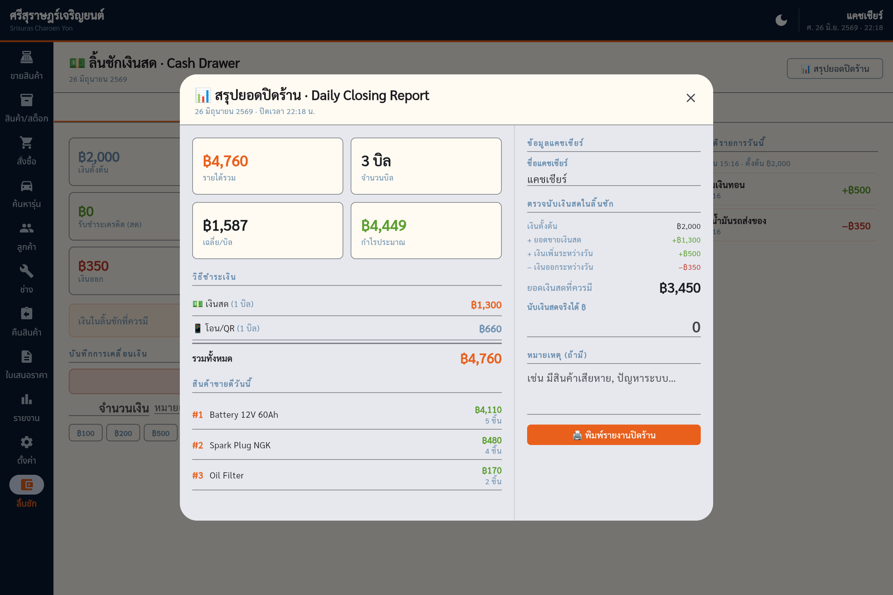
ปุ่ม 📊 สรุปยอดปิดร้าน — รายงานปิดร้านประจำวันแบบเต็ม
- เปิดหน้าลิ้นชัก แล้วไปแท็บ 🔒 ปิดลิ้นชักหรือกดปุ่ม 📊 สรุปยอดปิดร้าน มุมขวาบนเพื่อดูรายงานเต็ม
- นับเงินสดจริงนับเงินในลิ้นชักแล้วกรอกในช่อง นับเงินสดจริงได้ ฿
- ดูผลต่างระบบเทียบกับ “เงินที่ควรมีในลิ้นชัก” และแสดง ตรงยอด / เงินเกิน / เงินขาด
- กด 🔒 ยืนยันปิดลิ้นชักหลังปิดแล้ว จะเพิ่มรายการเงินเข้า-ออกไม่ได้อีก (ป้องกันการแก้ยอดย้อนหลัง) และพิมพ์รายงานปิดร้านได้
ไม่ลืมกะไหนเลย
หากลืมปิดลิ้นชักของเมื่อวาน เมื่อเปิดร้านวันใหม่ ระบบจะเก็บกะเก่าเข้าประวัติให้อัตโนมัติก่อนเปิดกะใหม่
ศรีสุราษฎร์เจริญยนต์ · POS14 · ตั้งค่า
Section 14
ตั้งค่า & สำรองข้อมูล Settings & Backup
แก้ข้อมูลร้าน เปลี่ยนธีม และที่สำคัญที่สุด — สำรองข้อมูลเพื่อกันข้อมูลสูญหาย
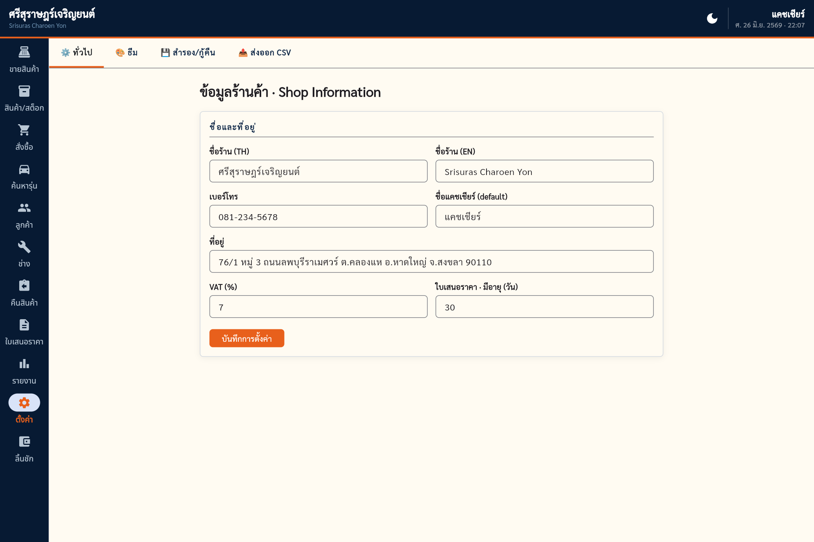
แท็บ ทั่วไป — ชื่อร้าน (TH/EN) · เบอร์โทร · ชื่อแคชเชียร์ · ที่อยู่ · VAT · อายุใบเสนอราคา
แท็บในหน้าตั้งค่า
- ⚙ ทั่วไป — ข้อมูลร้านที่จะขึ้นบนใบเสร็จและใบเสนอราคา (กด บันทึกการตั้งค่า ทุกครั้ง)
- 🎨 ธีม — สลับโหมดมืด/สว่าง (สลับจากปุ่มบนแถบบนสุดก็ได้)
- 💾 สำรอง/กู้คืน — ⬇ สำรองข้อมูล (ดาวน์โหลดไฟล์) / ⬆ กู้คืนข้อมูล
- 📤 ส่งออก CSV — ส่งออกสรุปยอดขาย รายละเอียดขาย และสินค้าคงเหลือ เป็นไฟล์ตาราง
สำคัญที่สุด — สำรองข้อมูลทุกวัน
ข้อมูลทั้งหมดเก็บไว้ในเครื่องนี้เครื่องเดียว (ออฟไลน์) ถ้าเครื่องเสีย ลงเครื่องใหม่ หรือถูกล้างข้อมูล ข้อมูลจะหาย — ให้กด สำรองข้อมูล ในแท็บ สำรอง/กู้คืน เป็นประจำ แล้วเก็บไฟล์ไว้ที่ปลอดภัย (เช่น USB หรือคลาวด์)
การกู้คืน
เวลากู้คืน ระบบจะล้างข้อมูลเดิมทั้งหมดก่อน แล้วเขียนจากไฟล์สำรอง — ตรวจให้แน่ใจว่าเลือกไฟล์ถูกใบ
ศรีสุราษฎร์เจริญยนต์ · POSภาคผนวก
Appendix
เคล็ดลับ & คำถามพบบ่อย Tips & FAQ
ลำดับงานในหนึ่งวัน
- เปิดร้านเปิดลิ้นชัก กรอกเงินตั้งต้น
- ขายทั้งวันขายสินค้า · พักบิล · คืนสินค้า ตามจริง
- ปิดร้านนับเงิน ปิดลิ้นชัก พิมพ์รายงาน
- สำรองข้อมูลดาวน์โหลดไฟล์สำรองเก็บไว้
เอกสารและเลขที่
- RC — ใบเสร็จรับเงิน
- CN — ใบลดหนี้ (คืนสินค้า)
- QT — ใบเสนอราคา
- PO — ใบสั่งซื้อ
- CP — ใบรับชำระเครดิต
- CUS / M — รหัสลูกค้า / ช่าง
คำถามพบบ่อย
ถาม: เพิ่มจำนวนในตะกร้าไม่ได้ ขึ้นว่าสต็อกไม่พอ?
ตอบ: ขายได้ไม่เกินจำนวนคงเหลือจริง หากต้องการขายเพิ่ม ต้องรับของเข้าสต็อกก่อน (หัวข้อ 9) หรือปรับสต็อกในหน้าสินค้า
ถาม: ปรับราคาในตะกร้าไม่ได้?
ตอบ: การปรับราคาเฉพาะรายการใช้ได้เมื่อเลือกช่างในบิลแล้วเท่านั้น และห้ามต่ำกว่าทุน
ถาม: คืนสินค้าซ้ำไม่ได้?
ตอบ: คืนได้ไม่เกินจำนวนที่ขายจริง บิลที่คืนครบแล้วจะถูกล็อกเป็น “ยกเลิกแล้ว”
ถาม: เปลี่ยนเป็นโหมดมืดอย่างไร?
ตอบ: กดปุ่ม 🌙 / ☀️ บนแถบบนสุด หรือไปที่ตั้งค่า → แท็บ ธีม
ถาม: ข้อมูลหายไหมถ้าปิดแอป?
ตอบ: ไม่หาย ระบบเก็บทุกอย่างไว้ในเครื่อง (ออฟไลน์) แต่ให้สำรองข้อมูลสม่ำเสมอเผื่อเครื่องเสีย
ติดปัญหา?
หากระบบค้างหรือแสดงผลผิดปกติ ให้ลองเปิดแอปใหม่ ข้อมูลที่บันทึกแล้วจะยังอยู่ครบ